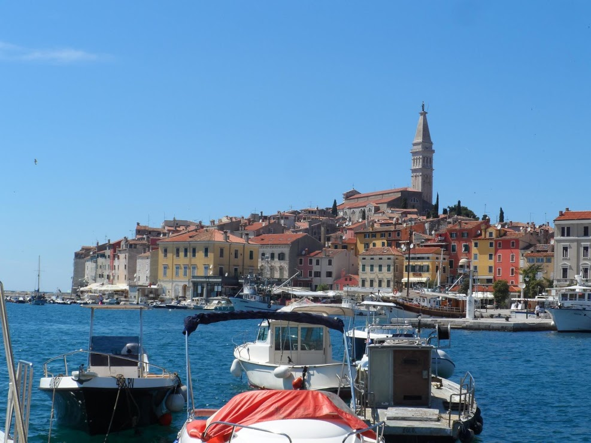
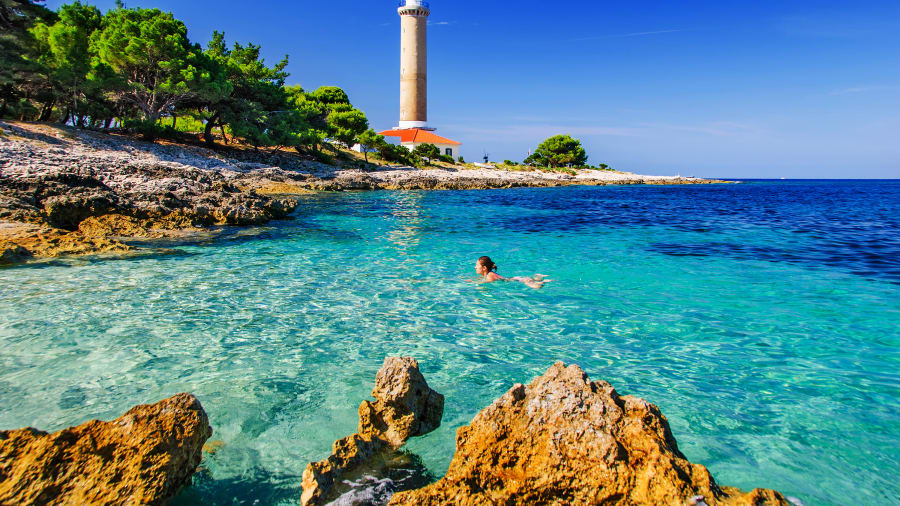
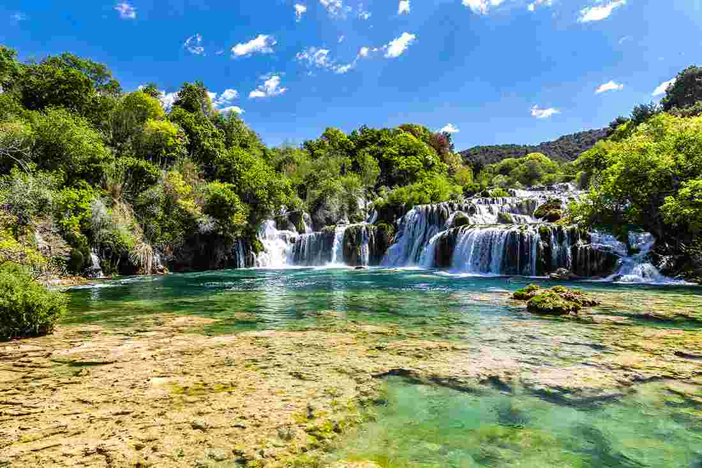
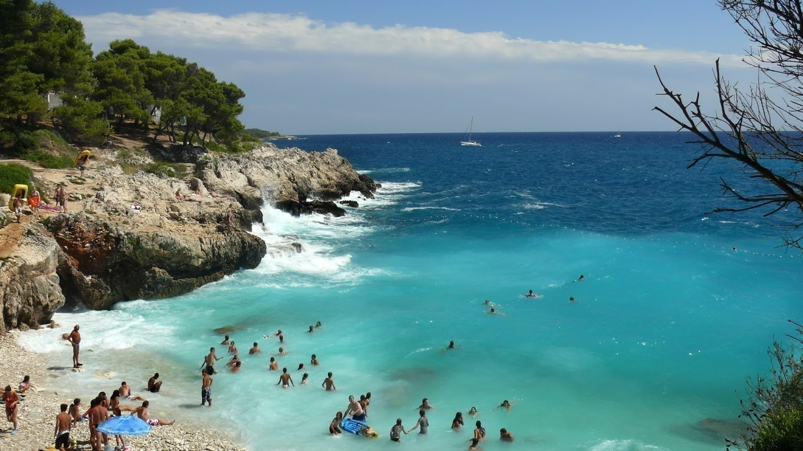

Kelionė į Kroatiją!
Kroatijoje labai gražu, tiesa? Šią šalį ypač pamėgusios šeimos su vaikais ir vyresni žmonės. Kodėl? Puikus klimatas, nuostabi gamta, skanūs ir prinokę vaisiai bei daržovės, įkandamos kainos. Nors, tiesa, nuo tėvų laikų jos jau gerokai pasikeitusios. Vis dėlto Kroatija – nuostabi atostogų vieta, kurią tikrai rekomenduoju ir jauniems keliautojams!
Patarimai:
- Nepamirškite įsigyti maudymosi batų – jie tikrai pravers! Kroatijoje dauguma paplūdimių akmenuoti, o jūroje nemažai jūrų ežių, be to, jei ketini šokinėti nuo uolų (ar bent jau pabandyti) Tau jų tikrai prireiks! Įsigyti šiuos batus gali labai nebrangiai visuose didžiuosiuose Lietuvos prekybos centruose (apie 8 Eur). Jų galėsi įsigyti ir pačioje Kroatijoje, tiesa, už šiek tiek brangiau.
- Nardymo kaukė ir vamzdelis – būtini dalykai įsigyti prieš keliaujant prie Adrijos jūros! Vanduo ten baisiai sūrus – būk atsargus plaukiodamas be akinių – skaudės! Be to, akiniai būtini ir pažinti nuostabų povandeninį pasaulį – vajei, kiek įvairiausių žuvyčių gali pamatyti, gražu kaip mano akvariume! Verčiau juos įsigyk Lietuvoje – sutaupysi ir mažiau vargsi ieškodamas.
- Apsistokite apartamentuose! Kroatija tai ne Turkija – geri 5* viešbučiai su „viskas įskaičiuota“ nėra įprastas variantas. Siūlau rinktis šeimoms priklausančius apartamentus ir rezervuotis juos kuo anksčiau – tikrai sutaupysi! Kroatai tikrai labai draugiški žmonės ir, kiek man teko apsistoti tokiuose apartamentuose, niekad nenusivyliau, susipažinau su fantastiškais ir labai vaišingais žmonėmis.




monika šadauskaitė